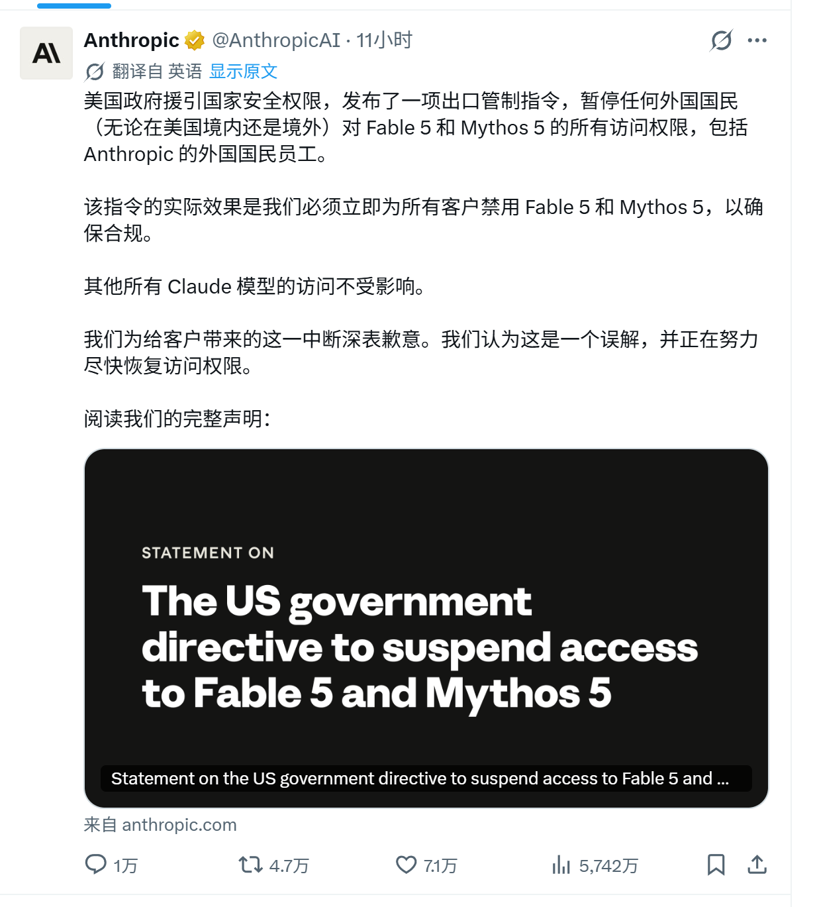
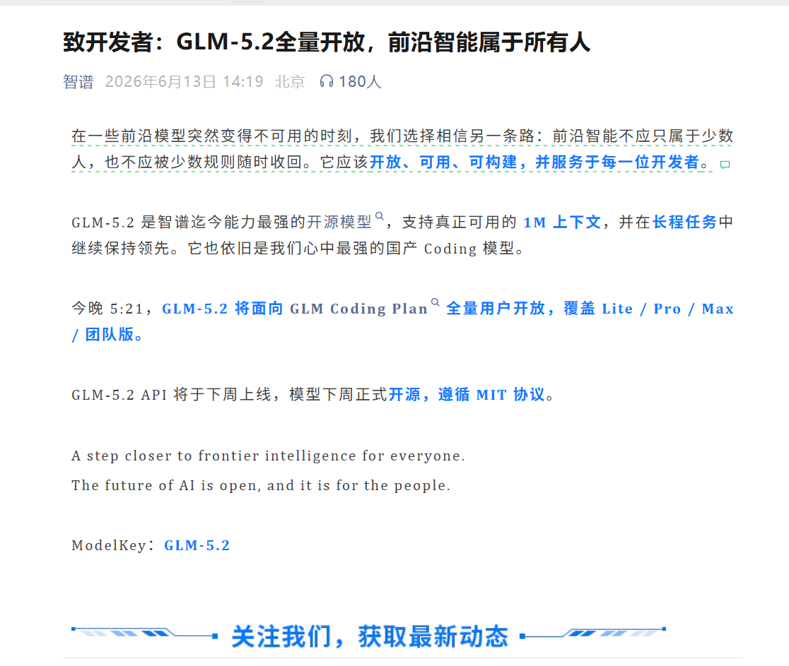

上线仅
4
天
全网下架
旗舰模型 · 紧急召回
海外官方公告

国家安全 · 一纸管制 · 全球禁用
一条公告
5742
万
阅读 · 朋友圈直接刷屏
同一天 · 另一边
有人
把门打开
而不是关上
国产团队官方公告

「
前沿智能 不该只属于少数人
」
GLM-5.2
国产新一代开源模型
1M
真正能用的 超长上下文
MIT
完全开源 协议开放
稳
大型工程 长任务 稳如老牛
同一天 · 两种选择
国产 GLM-5.2
开源
把门打开
海外旗舰
封锁
把门焊死
差距在算力 · 不在脑力
墙 · 挡不住洪流
智能
属于所有人
★ 关注我
一起看懂 AI